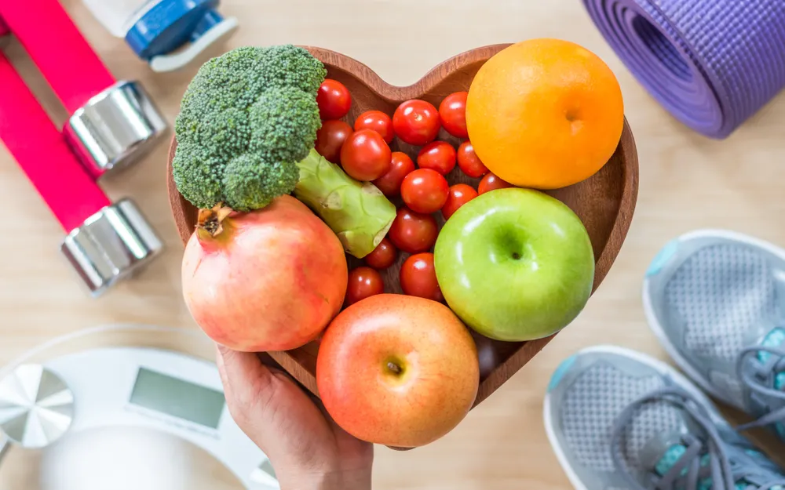

Heart Healthy Snacks You Should Be Eating

It’s incredibly important to be mindful of heart health at all ages, and there are a few easy steps you can take to keep your heart happy. Being mindful of what you consume, particularly by adding at least five servings of vegetables and fruits to your diet every day, is one important step towards heart health.
Snacking isn’t nearly as bad as the rap it’s been given, especially if you opt for healthy, nutrient-packed, unprocessed options. So if you’re looking to support your heart health, here are eight heart-healthy snacks you should be eating.
Nuts and Seeds
According to the American Heart Association , raw or roasted nuts and seeds make a great snack. They’re packed full of heart-healthy unsaturated fatty acids and protein that keep you full. They also may help lower bad cholesterol contributing to better overall heart health. Nuts and seeds are generally high in calories, so just be sure to be mindful of the portions you’re consuming.
Toast with Natural Peanut Butter or Almond Butter
In a study published by The American Journal of Clinical Nutrition , regular consumption of nut butter may reduce your risk of heart disease by up to 30-percent! Whole grain toast with natural peanut butter or almond butter is delicious and filling without the processed sugar found in some popular brands. If you’re up to it, try making your own bread at home using whole wheat to ensure it’s completely free of preservatives.
Any Fruit
According to the Heart and Stroke Foundation , you can’t go wrong with fresh fruit of any kind if you’re looking for a heart-healthy snack. The natural sugars are delicious, and many fruits are hydrating and full of fiber . This is also a great snack because it offers quite a bit of variety. From berries to apples to pears and peaches, the snack options are endless!
Homemade Energy Balls
Energy bites, balls, or bars made with whole ingredients are a great heart-healthy snack — perfect for on-the-go. Ingredients such as nuts, seeds, oats, and maple syrup or dates (if you need something sweet) are all great options. You can also add chia, flax, and hemp seeds for omega 3s, which may help reduce inflammation (a risk factor for heart disease ). If you’re looking for some inspiration, check out these 10 Delicious and Nutritious Energy Bar and Ball Recipes !
Whole Grain Crackers with Hummus
This filling snack is perfect if you’re looking for a heart-healthy option. Whole grains contain fiber , which is known to lower cholesterol . Additionally, eating chickpeas (like all legumes) has been linked to reducing one’s chance of getting heart disease , largely because of the fiber content. This makes hummus a very healthy option for snacking.
Edamame
Edamame is whole, immature soybeans common in Asian cuisine. In fact, you may have had them at a restaurant before! These beans are packed with protein and fiber, don’t raise blood sugars, and may reduce cholesterol . It’s a delicious snack that can be quickly prepared in the microwave and lightly salted, which is a great way to squash a salty craving while still supporting your heart health. Most of the time you can find edamame frozen at your local grocery store.
Popcorn
Air-popped popcorn (not from a bag of microwave popcorn) is a great heart-healthy snack because it’s a high-fiber whole grain, which studies have linked to a lower risk of heart disease and diabetes . The key is to keep the popcorn lightly seasoned and not drench it in butter and salt as you’d get at the movie theater! Otherwise, it’s the perfect snack any time of the day.
Dark Chocolate Covered Strawberries
If you’re in the mood for something sweet, fresh strawberries with a little bit of dark chocolate is a great choice. Fruits are a heart-healthy snack and berries are naturally sweet while dark chocolate (50 to 90 percent cocoa) is high in flavonoids and may lower your risk of heart disease , insulin resistance, and high blood pressure . You can melt the dark chocolate with a small amount of coconut oil to dip the berries in or drizzle on. Just remember, the darker the chocolate is, the better it is for you! This is because it contains less processed sugar.
Source: https://activebeat.com/diet-nutrition/heart-healthy-snacks-you-should-be-eating/